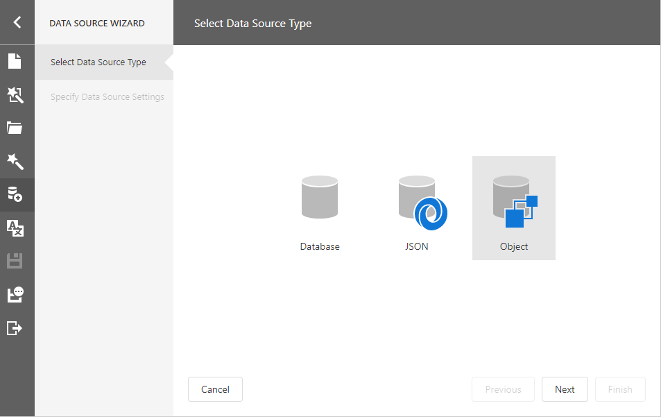
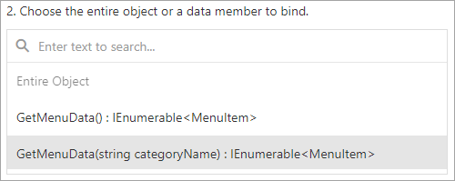
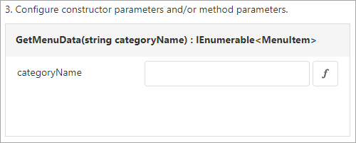

Bind a Report to an Object Data Source
This topic describes how to bind a report to object data at design time.
Add a New Data Source
Select Add Data Source from the designer menu.

This invokes the Data Source Wizard.
Choose Object and click Next.

Specify data source settings on the next screen.

Select a data object or constructor from the list. If you select a data object, its default constructor is used.

Select the method that should provide data or select Entire Object to bind the report to the object's fields.

Specify constructor and/or data member parameters, if required.

You can use expressions to provide data source parameter values. Click the
 button to switch the parameter's editor to the expression mode. Specify an expression in the parameter's editor, or click the parameter's ellipsis button to launch the Expression Editor. You can use report parameters in expressions to specify an input value for a data source parameter.
button to switch the parameter's editor to the expression mode. Specify an expression in the parameter's editor, or click the parameter's ellipsis button to launch the Expression Editor. You can use report parameters in expressions to specify an input value for a data source parameter.
Click Finish to close the Data Source Wizard.
Once you finished the wizard, the data source becomes available in the Report Explorer's Data Sources node. The Field List reflects the data source structure.

Configure Parameters
Choose an ObjectDataSource component in the Field List and click Edit Parameters. Reconfigure the parameters on the invoked wizard page and click Finish to apply the changes.

For more information on how to set up an object data source, refer to the Data Source Wizard.